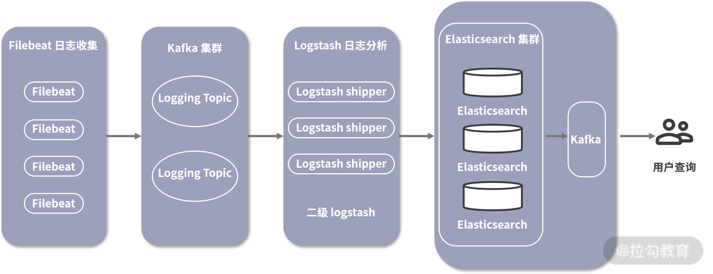

- 00 分布式链路追踪实战.md.html
- 01 数据观测：数据追踪的基石从哪里来？.md.html
- 02 系统日志：何以成为保障稳定性的关键？.md.html
- 03 日志编写：怎样才能编写“可观测”的系统日志？.md.html
- 04 统计指标：“五个九”对系统稳定的真正意义.md.html
- 05 监控指标：如何通过分析数据快速定位系统隐患？（上）.md.html
- 06 监控指标：如何通过分析数据快速定位系统隐患？（下）.md.html
- 07 指标编写：如何编写出更加了解系统的指标？.md.html
- 08 链路监控：为什么对于系统而言必不可少？.md.html
- 09 性能剖析：如何补足分布式追踪短板？.md.html
- 10 链路分析：除了观测链路，还能做什么？.md.html
- 11 黑白盒监控：系统功能与结构稳定的根基.md.html
- 12 系统告警：快速感知业务隐藏问题.md.html
- 13 告警质量：如何更好地创建告警规则和质量？.md.html
- 14 告警处理：怎样才能更好地解决问题？.md.html
- 15 日志收集：ELK 如何更高效地收集日志？.md.html
- 16 指标体系：Prometheus 如何更完美地显示指标体系？.md.html
- 17 链路追踪：Zipkin 如何进行分布式追踪？.md.html
- 18 观测分析：SkyWalking 如何把观测和分析结合起来？.md.html
- 19 云端观测：ARMS 如何进行云观测？.md.html
- 20 运维集成：内部的 OSS 系统如何与观测相结合？.md.html
- 21 结束语 未来的监控是什么样子？.md.html
- 捐赠
15 日志收集：ELK 如何更高效地收集日志？
在模块二，我介绍了如何将可观测性和告警体系相结合。从模块三开始，我将带你了解如何实现可观测性的理念。本节课作为模块三的第一节，我将从日志模块开始，介绍如何在实践中应用。
作用
在了解日志收集之前，我们先来看一下它有什么作用。
随着服务集群、应用组件的增加，在没有日志管理之前，我们查看日志内容时，往往相当麻烦。在服务集群的概念中，一个服务往往不是单独部署的，而是以一个集群的方式。因此，在执行时，通常会将请求通过负载均衡策略路由到一个实例中。
那我们想观察这个请求日志，就要到每一台机器中里寻找。而日志检索又经常涉及多个组件或者应用，如果没有有效的解决方案，开发和运维人员就会在日志检索上浪费太多时间，无法及时发现问题。
由此，便有了我们今天的这个主题：日志收集。日志收集可以帮助开发和运维人员解决日志检索和汇总问题，它通常有 4 个功能。
- 日志聚合：将不同系统之间的日志组合到同一个系统中，不用再登录到每台机器上查看日志内容。你只需要连接到日志系统即可查看所有日志，而并非只是一个服务的日志。
- 统一格式：将所有收集到的日志按统一的格式汇总。服务和服务之间的日志格式可能并不相同，但是日志系统收集处理后，能以相同的数据风格存储和查询，解决用户在进行数据检索时的内容不一致问题。
- 日志归档：日志收集后同样便于我们进行日志归档。日志归档以后，除了能看到实时的内容，我们还能通过日志系统检索，查询到历史数据，极大地节省了我们的日志检索成本。
- 日志串联：通过日志与链路追踪中 trace 的概念相结合，我们在查看问题时，只需要找到相关的 trace 信息，就可以找到这个链路在所有层面中的日志内容，帮助我们聚焦问题。
原理
在市面上，有很多开源工具可以实现日志收集，，它们的功能大致相同，但并没有好坏之分，更多的是侧重点不同。这些开源工具的底层实现原理基本都分为 4 个步骤：日志收集、日志解析、日志存储和日志检索。
日志收集
指将日志内容发送到日志收集器中。一般有 2 种比较常见的方式。
- socket：在程序中使用 socket 链接将日志内容发送到日志收集器中。这种方式存在一个弊端，就是因为日志收集器非高可用，当收集器出现问题时，日志可能丢失。
- agent：程序将日志内容写入本地磁盘中，在这个程序所属的机器或者容器中部署日志收集程序，当日志文件变化时，将日志变化的部分收集并发送到收集器中。这也是目前比较常见的一种做法。
日志解析
通过 socket 和 agent 收集日志后，都会根据日志中规定好的格式解析出相对应的数据，比如使用正则的方式，解析数据组中的日志等级、时间戳、日志内容、异常等信息。
此时，我们也可以对日志中的内容做更细化的处理，比如在解析到 IP 地址信息时，同时增加其所属地区等信息，让数据更具有可辨识度。
这时候可能会产生一个问题：如何规范日志格式？
很多的组件中的日志格式都是相对统一的，我们只需要挨个适配就可以了。但是业务系统中的日志要怎么规范？我们一般有 2 种策略。
- 统一日志格式：统一所有业务系统中生成的日志格式，均使用同一种日志规范。这就要求所有的业务方都保持日志输出样式的统一。这样的方式虽然简单粗暴，但是也存在一些问题，比如有些业务系统中更强调某个内容，业务人员会对这些内容做个性化的格式处理，这可能会导致无法适配。
- 自定义日志解析：通过日志系统来实现对各个业务系统的适配，业务方只需要针对当前系统的日志格式进行配置。因为涉及自定义内容，这种方式会提高日志系统的开发难度，但长期考虑，仍是利大于弊的。
日志存储
日志解析后就需要将这些统一格式的结构化内容存储至数据库中。一般这时会选择支持海量存储的数据库，比如 ElasticSearch 和 HDFS。日志存储时也需要将机器信息一同存储，这样便于确认是哪里产生的数据，与其他系统在交互时也会使用到。
日志检索
日志存储到了数据库之后，我们可以通过 UI 界面检索数据。一般我们会提供针对某些字段的搜索功能，这样就可以根据字段值搜索相关的日志，比如我在上文中提到的日志串联功能，我们可以根据链路中的 TraceID 字段检索相对应的内容。
在查询错误日志时，我们可以先从上游服务，比如 Nginx 的访问日志中，预先检索出状态码为 500 或者其他认定为错误的日志内容，并且从中找出相对应的链路 ID。接下来再通过这个链路 ID 检索，就可以筛选出这个链路中所有相关组件的日志信息。
通过发送、解析、存储和检索这 4 个步骤，就可以实现一个完整的日志系统，市面上很多日志系统也是依据于此展开的，比如我下面要讲的 ELK。
ELK
ELK 是一套完整的日志系统解决方案，它提供了从日志收集、日志解析、日志存储到最终日志展示的完整功能。ELK 其实就是 3 个开源产品的缩写，分别是 ElasticSearch、Logstash 和 Kibana，分别用于数据存储、数据采集和展示。
系统架构
部署 ELK 时，Logstach 就充当了日志采集和日志解析工作，Elasticsearch 用于数据存储，Kibana 用于数据检索。
现在也会使用 Filebeat 来代替 Logstash 完成数据采集工作。Filebeat 可以轻量化地部署在每一个服务容器中，使用较少的资源就可以实现数据采集的工作，并将其通过自定的协议发送到 Logstash 中对数据进行更细致的处理。

ELK 部署架构图
这张图展现了一个比较主流的部署架构图，其中最左侧的就是在每台机器上部署的 Filebeat。
收集到数据之后，它会将数据发送至 Kafka 集群中。Kafka 是一个开源流处理平台，它提供了高效率的发布与订阅功能，并且在消费不过来时，它还可以充当生产者与消费者数据处理之间的缓冲。
接下来 Logstash 就可以启动一个集群来消费 Kafka 集群中的日志信息，这里的 Logstash 主要负责解析日志，并且将解析后的内容发送到 ElasticSearch 集群。如果 Kafka 中的 Lag 数量不断增加，则说明 Logstash 集群的消费能力不足以处理日志内容，这时需要动态地增减 Logstash 集群机器，从而实现发送与消费方的平衡。
数据写入 ElasticSearch 集群后，我们便可以通过 Kibana 的控制台查看和汇总日志，使用者在部署运行这样一套系统后，通过 Kibana 界面即可配置和查询数据。
我就不介绍 ELK 的安装方式了，ELK 已经使用多年了，整体相对稳定，它的安装方式很容易就能在网上搜到。接下来我会对常见的 Kibana 的使用做简要说明。
Kibana 的使用方式
Kibana 是一个针对 ElasticSearch 的数据分析与可视化平台，用来搜索、查看存储在 ElasticSearch 中的数据。如果你感兴趣，可以点击这里，前往官网体验提供的 demo。

图中是一个比较典型的日志检索界面。
它支持通过时间筛选日志内容，我们可以在最上方通过 KQL 或者 Filter 来检索数据，比如我们的系统根据用户 ID 来进行检索，此时就可以输入指定的语句，筛选出符合条件的日志内容。链路追踪的 TraceID 是一个比较常见的查询方式。
左边的竖列就是目前系统中所有已知的字段列表，一般这个列表有 2 个作用：
- 展示 topN 数据。点击具体的字段，可以看到最近一定数据范围内的 topN 数据量占比，可以更快地分辨出哪些值是相对较多的。比如我们想看一段时间内指定的用户访问哪些路径比较多，一般可以先筛选用户 ID，然后点击 URL 字段，就可以看到其更多会访问哪些 URL，了解用户访问是否存在问题。
- 添加到右侧显示。由于默认右侧会显示全部的数据，我们可以通过选择具体的字段，将其添加到右侧显示，让右侧展示你想看到的数据内容。
右侧展示的是我们具体搜索到的数据内容，也包含日志在不同时间段内的数据量分布。通过数据量分布，我们可以了解到哪些时间段内的数据更多。
在日志内容显示上，除了根据在左侧的字段显示以外，还可以通过点击每一行的箭头按钮，查看这条日志中的每一个字段值是什么信息，比如时间戳、日志所属机器、日志内容。同时，我们还可以点击每一个具体的字段值左侧的添加按钮，再次依据这个数据值进行筛选日志。
结语
以上，就是我对于日志系统中原理和 ELK 的介绍。ELK 是目前一个比较常见的日志可视化平台，在查看问题时会经常用到。那么，说了这么多，你通过 ELK 解决过什么样的问题呢？欢迎你在留言区分享。
下一节，我将带你了解 Prometheus。
© 2019 - 2023 Liangliang Lee. Powered by gin and hexo-theme-book.